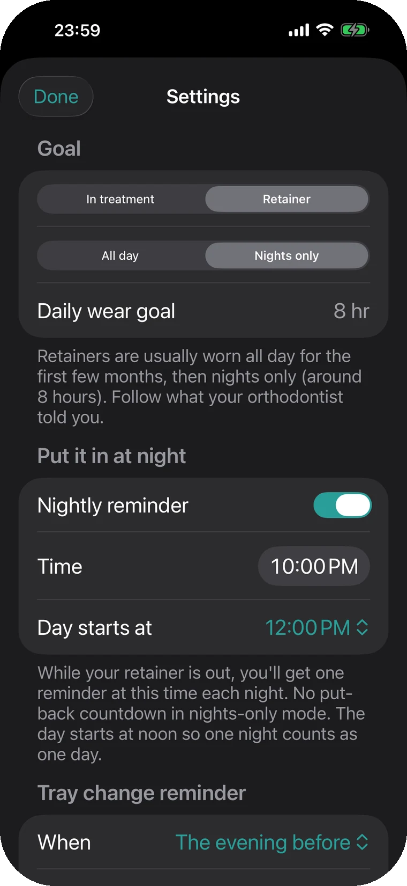
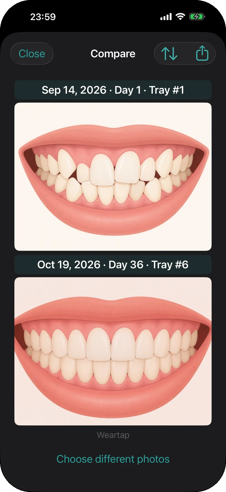
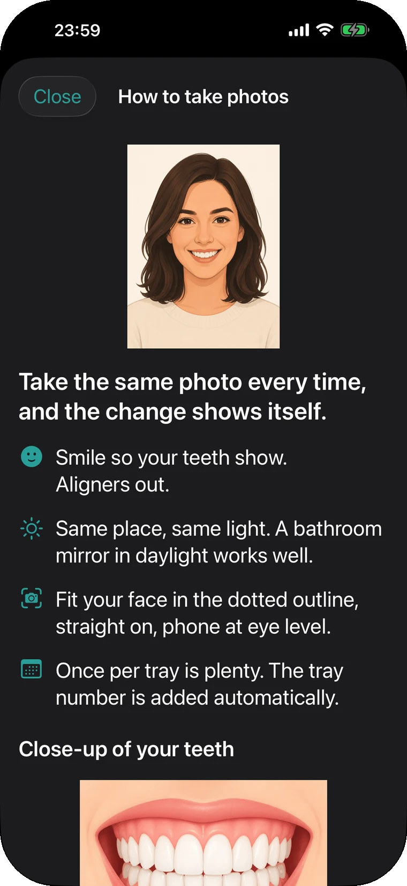
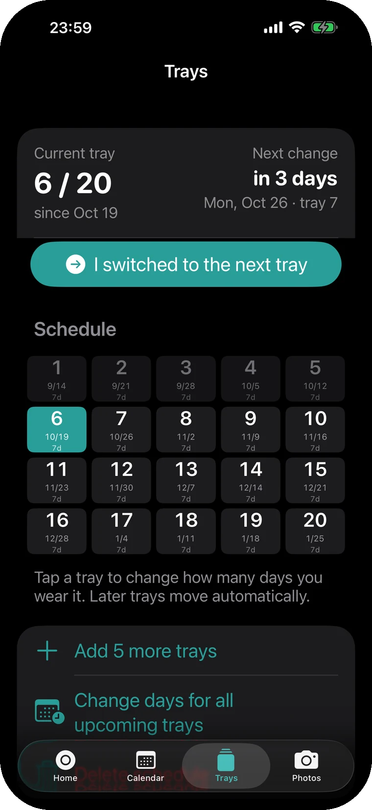

Put them back from the Lock Screen, too.
Done brushing? Tap Put back on the Lock Screen card. Open the app and it shows how long you can still be out today, worked out from your 22-hour goal.
ProThe Lock Screen card is a Pro feature.
Weartap counts the minutes your clear aligners are out and tells you when to put them back. You can log from the Lock Screen and widgets, so you don't have to open an app at every meal.
Free to start. Pro is a one-time purchase with a 7-day trial.
Scroll, and the clock moves. Follow one day, starting with breakfast at 7:12.
Done brushing? Tap Put back on the Lock Screen card. Open the app and it shows how long you can still be out today, worked out from your 22-hour goal.
ProThe Lock Screen card is a Pro feature.
You took them out for lunch and forgot to log it. At 12:35 you tap Take out, then −15 min, and the record starts at 12:20. Go back 5 to 60 minutes, or pick any time.
A snack, logged from the widget. Tap once to take them out, again to put them back. Control Center, the Action Button and Siri work the same way.
ProLogging from widgets and shortcuts is a Pro feature.
Dinner ran long and today's two hours are used up. A notification arrives right then, and you can log Put back from its button. Free sends it once. Pro repeats it every 1 to 30 minutes until they're back in.
21 hours 53 minutes worn, 7 minutes short of the goal, so the calendar marks it Almost. Met, Almost and Missed each get a color, with monthly and 7-day averages.
When you move to a retainer, switch the mode in Settings. If you only wear it at night, Weartap reminds you once each evening at the time you choose. Your records and photos stay where they are.

Take smile shots and close-ups of your teeth, then compare any two of the same kind. A guide frame appears while you shoot, so every photo lines up.



You take aligners out several times a day. Hunting for an app each time gets old in three days, so Weartap gives you more places to tap.
Everything marked Pro also works during the 7-day trial.
Logging, the calendar, the tray schedule, teeth photos and comparisons, iCloud backup and CSV export are all free. Pro is a one-time purchase and includes features added later. No subscription, no ads.
$14.99Pro, one-time purchase, with a 7-day trial.
The trial ends on its own. You're never charged automatically.
| What Pro adds | Free | Pro |
|---|---|---|
| Time-to-put-back alert | Once a day | Repeats until they're in |
| Log from the Lock Screen, widgets, Control Center and Shortcuts | — | Included |
| Countdown on the Lock Screen and in the Dynamic Island | — | Included |
| Choose when your day starts | — | Included |
| Features added later | — | Included |
Weartap has no server. Records and photos are saved on your iPhone and in your own iCloud, and we can't see them.
No accountNo email address, no name.
No tracking, no adsNo analytics, no ads, no crash reporting built in.
Moves with youSame Apple ID on a new iPhone? Install the app and your records and photos come back.
Yes. Counting the time they're out works the same for every brand of clear aligners.
Yes. It starts at 22 hours. Set it to what your orthodontist told you.
By default the day changes at midnight. With Pro you can move the start of your day, say to 4:00, so late nights count toward the day before.
Time before you started using the app isn't counted, because Weartap can't know whether you were wearing them. On that day only, the goal is scaled to the hours left. From the next day you get your full goal.
No. The trial simply ends and you're back on the free version. Buy Pro only if you want to keep it.
No. It's a timer that logs time out and sends reminders. It gives no treatment advice. Follow your orthodontist's instructions for wear time and treatment.
21:53worn that day
Tap when they come out, tap again when they go back in. Each day is kept as a ring like this one.